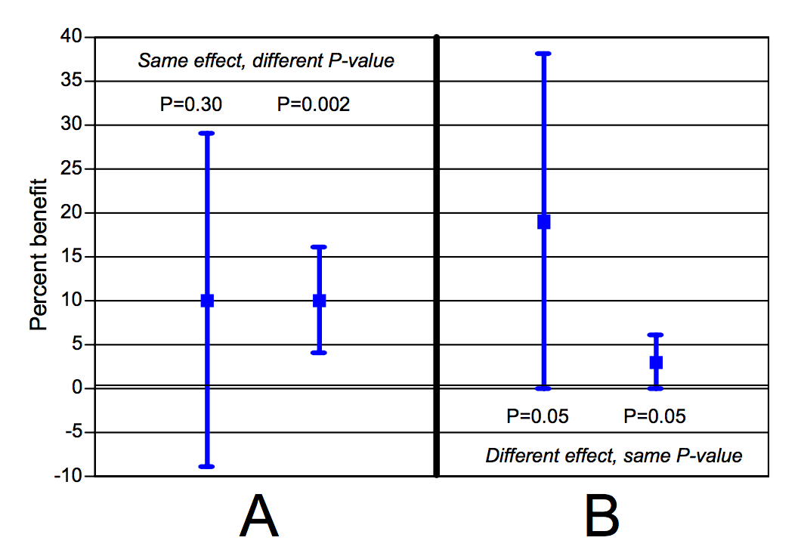

Einführung in R Programming
Tag 3 - Datenimport und -modellierung
Andreas Mock
19.05.2020
Ablauf - Tag 3
- Datenimport mit
readr und readxl
- Datenmodellierung
- Häufige Missverständnisse über den p-Wert

Dateipfade
- Wie finde ich den absoluten Dateipfad heraus, in dem sich meine R Umgebung befindet, das so genannte working directory?
## [1] "C:/Users/admmock/PowerFolders/git/content/AMhome"
- Welche Dateien befinden sich in dem aktuellen Dateipfad?
## [1] "_site" "_site.yml" "AMhome.Rproj" "data"
## [5] "index.html" "index.Rmd" "pics" "pres_day1.html"
## [9] "pres_day1.Rmd" "pres_day1_cache" "pres_day1_files" "pres_day2.html"
## [13] "pres_day2.Rmd" "pres_day2_files" "pres_day3.html" "pres_day3.Rmd"
## [17] "pres_day3_files" "pres_day4.Rmd" "pres_day4_files" "pres_day5.Rmd"
## [21] "pres_day5_cache" "pres_day5_files" "refs.Rmd" "refs2020.Rmd"
## [25] "SITE_L~1" "SITE_L~2" "SITE_L~3" "SITE_L~4"
## [29] "site_libs" "solution1.Rmd" "solution2.Rmd" "solution3.Rmd"
## [33] "solution4.Rmd" "teaching.Rmd" "teaching_cache" "teaching_files"
- Wie kann ich ausgehend vom working directory einen relativen Dateipfad angeben?
Mit dem Präfix ../ lässt sich eine Ordnereben, mit ../../ entsprechend 2 Ebenen nach oben gehen.
Der relative Pfad
## [1] "AMhome" "Github_page"
## [3] "Github_paper_content" "TMO_page"
## [5] "Zewener_Kammerkonzerte_Webpage"
entspricht damit dem absoluten Dateipfad
list.files("C:/Users/admmock/PowerFolders/git/content/")
- Wie kann ich Daten aus dem Internet einlesen?
Einfach den Webpfad benutzen:
library(readxl)
path <- paste0("https://tcga-data.nci.nih.gov/docs/publications/sarc_2017/",
"SARC_264_Fusion_Gene_Profiles.txt")
read_tsv(file = path)
Datenimport
Benötigte Packete: readr Paket im tidyverse, sowie das bisher noch nicht verwendete Paket readxl.
Funktionen zum Import nach Dateityp:
read_tsv: tab-separated fileread_csv: comma-separated fileread_xlsx bzw. read_xls: Excel spread sheetread_delim: file mit beliebig anzugebendem delimiter, also Trennzeichen
Datenmodellierung
HNSCC Datensatz laden
load(url("http://andreasmock.github.io/data/hnscc.RData"))
T-Test
Der T-Test ist ein parametrischer (geht von normalverteilten Daten aus) Hypothesentest zum Vergleich von kontinuierlichen Daten zweier Gruppen.
ggplot(hnscc, aes(x=gender, y=age)) +
geom_boxplot()

t.test(age ~ gender, data=hnscc)
##
## Welch Two Sample t-test
##
## data: age by gender
## t = 2.5518, df = 116.84, p-value = 0.01201
## alternative hypothesis: true difference in means is not equal to 0
## 95 percent confidence interval:
## 1.008323 7.998547
## sample estimates:
## mean in group FEMALE mean in group MALE
## 64.59211 60.08867
ANOVA (analysis of variance)
ANOVA bietet die Möglichkeit mehr als 2 Gruppen miteinander zu vergleichen.
ggplot(hnscc, aes(x=tabacco_group, y=age)) +
geom_boxplot() +
coord_flip()

summary(aov(age ~ tabacco_group, data=hnscc))
## Df Sum Sq Mean Sq F value Pr(>F)
## tabacco_group 3 4385 1461.7 10.79 1.02e-06 ***
## Residuals 268 36294 135.4
## ---
## Signif. codes: 0 '***' 0.001 '**' 0.01 '*' 0.05 '.' 0.1 ' ' 1
## 7 observations deleted due to missingness
Korrelationstest
ggplot(hnscc, aes(x=age, y=pack_years)) +
geom_point() +
geom_smooth(method="lm")
## `geom_smooth()` using formula 'y ~ x'

cor.test(~ age + pack_years, data=hnscc)
##
## Pearson's product-moment correlation
##
## data: age and pack_years
## t = 1.7489, df = 152, p-value = 0.08233
## alternative hypothesis: true correlation is not equal to 0
## 95 percent confidence interval:
## -0.01811495 0.29211981
## sample estimates:
## cor
## 0.1404481
Häufige Missverständnisse über den p-Wert
Der Erfinder des p-Wertes

Sir Ronald Fisher (1890-1962)
Gonville & Caius College, Cambridge
”Personally, the writer prefers to set a low standard of significance at the 5 percent point […] A scientific fact should be regarded as experimentally established only if a properly designed experiment rarely fails to give this level of significance.“
Definition des p-Wertes
Wahrscheinlichkeit das gleiche Stichprobenergebnis oder ein noch extremeres zu erhalten, wenn die Nullhypothese wahr ist.
Algebraische Definition: P(X \(\geq\) x \(\mid\)~ \(H_0\)) wobei \(X\) eine Zufallsvariable und \(x\) der beobachte Wert in den Daten ist

Goodman, 2008
#1 | Wenn p<0.05, ist die Nullhypothese nur in 5% wahr
Dies ist die wohl des p-Wertes.
Der p-Wert wird unter der Annahme berechnet, dass die Nullhypothese zutrifft (P(Daten \(\mid\)~\(H_0\))), er kann daher nicht gleichzeitig die Wahrscheinlichkeit sein, dass die Nullhypothese zutrifft (P(\(H_0\) \(\mid\) Daten)).
Beispiel: Die Wahrscheinlichkeit drei Mal hintereinander Kopf beim M"unzwurf zu erhalten ist p=0.125. Dies bedeutet jedoch nicht, dass die Wahrscheinlichkeit, dass die Münze fair ist nur 12.5% beträgt.
#2 | p>0.05 bedeutet, dass es keinen Unterschied zwischen den Gruppen gibt
Eine nicht signifikante Differenz bedeutet bloß, dass die beobachten Daten konsistent mit der Nullhypothese sind und nicht, dass die Nullhypothese wahrscheinlicher ist.
#3 | p=0.06 ist substantiell schlechter als p=0.04
Fisher hat den p-Wert als kontinuierliche Variable eingeführt um abzuschätzen, ob ein Ergebnis es Wert ist weiter untersucht zu werden. Die magische p-Wert Grenze von 0.05 ist völlig arbiträr. p-Werte von 0.04 und 0.06 sind sehr ähnliche Wahrscheinlichkeiten!
Goodman, 2008
#4 | Studien mit gleichem p-Wert zeigen eine ähnlich starke Effektgröße
Der folgende Plot zeigt, dass dies nicht zutrifft. Der gleiche p-Wert kann einen völlig anderen Effekt indizieren (Fig. B). Umgekehrt, kann es einen identischen Effekt bei unterschiedlichem p-Wert geben (Fig. A):

Goodman, 2008
#5 | p=0.05 bedeutet, dass man bei Wiederholung des Experiments in 5% ein nicht signifikantes Ergebnis erhält

Nur bei einer großen Effektgröße bzw. Power (i.e. Gruppengrößee) sind p-Werte bei Wiederholung des Experiments mit einer anderen Stichprobe reproduzierbar!
Literatur zum Thema
A Dirty Dozen: Twelve P-Value Misconceptions
Goodman, S
Semin Hematol. 2008 Jul;45(3):135-40.
The fickle P value generates irreproducible results
Halsey LG, Curran-Everett D, Vowler SL & Drummond GB
Nat Methods. 2015 Mar;12(3):179-85.